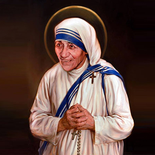

Nombre:
Teresa (Femenino)
Significado:
Cazadora, de origen Griego
Celebran:
Las Teresa suelen celebrar el 15-oct:
Santa Teresa de Ávila
Nació:
26 de agosto de 1910 en Skopje, en
el actual Macedonia
Falleció:
5 de septiembre de 1997 en Calcuta,
en el actual India
Proceso:
Hechavenerable el 20 de diciembre
de 2002 por Juan Pablo II
Beatificadael 19 de octubre de 2003
por Juan Pablo II
Celebración:
5 de septiembre
Religiosa:
De las Misioneras de la Caridad